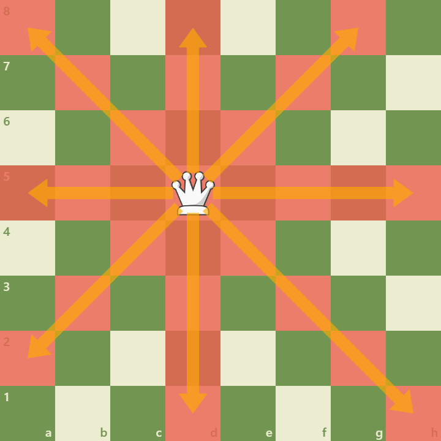

The queen combines the power of rook and bishop moving any number of squares along ranks, files, and diagonals and is the most powerful piece on the board.
Key Characteristics:

Movement Combines rook and bishop movement for maximum reach. Mobility High mobility makes the queen ideal for attack and defense but exposes it to tempo losses if chased.
Strategic Importance:
Attacks Queens create mating threats and tactical combinations.
Endgames Queens dominate open boards but require care to avoid perpetual checks.
Coordination Powerful when coordinated with rooks and minor pieces.
Using the queen effectively means balancing aggression with safeguarding it from harassment.